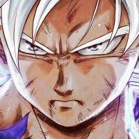
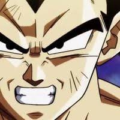
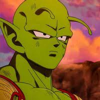

Nombre |
Descripcion |
Imagen |
GOKU |
Goku es un joven saiyan que es enviado a la Tierra para salvarle de la destrucción de su planeta. Sin embargo, crece sin conocer realmente sus orígenes ni la existencia de otros mundos. Las series hacen un recorrido por su vida hasta la edad adulta, momento en el que forma una familia y se convierte en padre. |
 |
GOKU |
Vegeta es el hijo mayor del Rey Vegeta, lo que le convierte en parte de la realeza, concretamente Príncipe de los Saiyajins. |
 |
GOKU |
Piccolo Daimaō es la parte malvada de un ser namekiano que llegó a refugiarse a la Tierra cuando un cataclismo climático casi destruyó la vida en ese mundo. Su parte buena se convirtió en Kamisama, por lo tanto conserva la mayoría de sus habilidades. |
 |